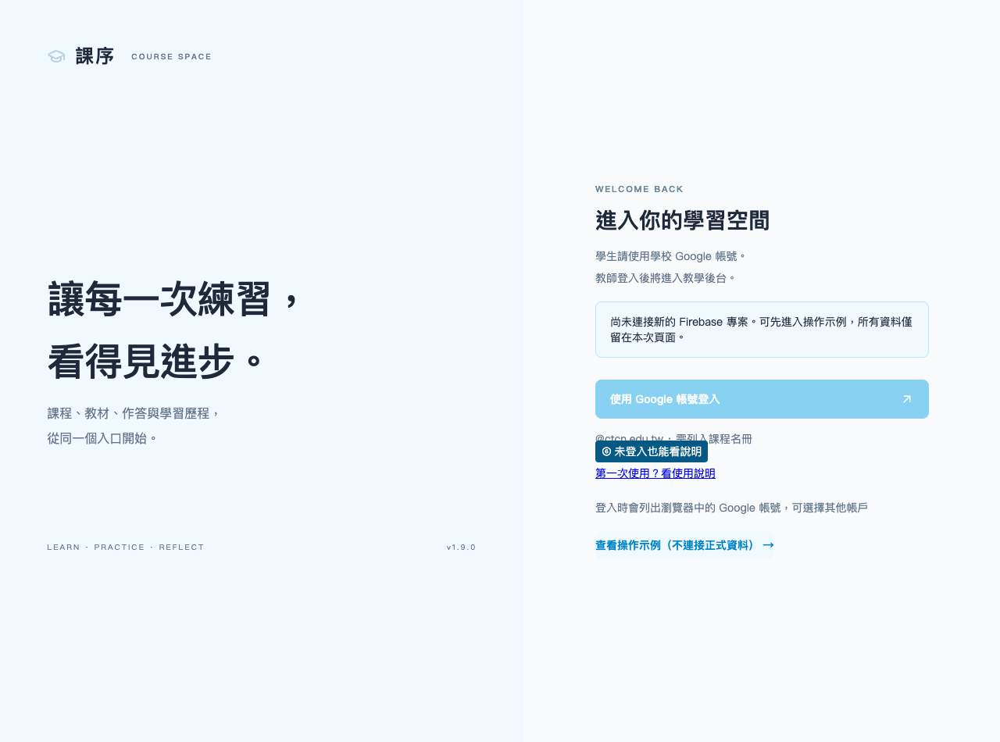
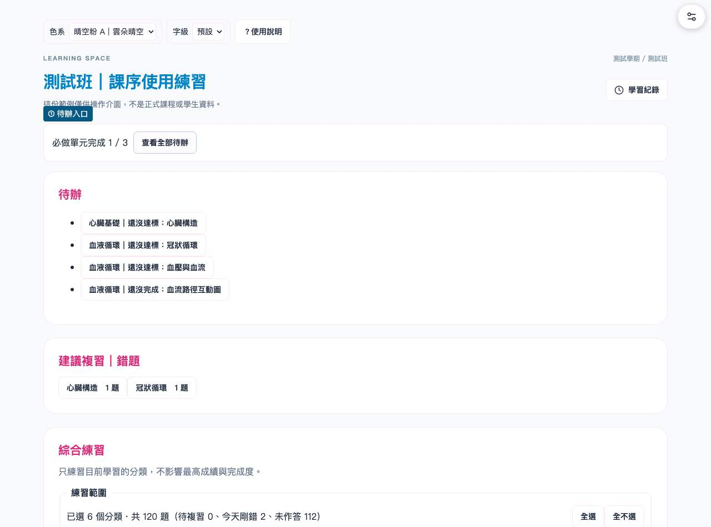
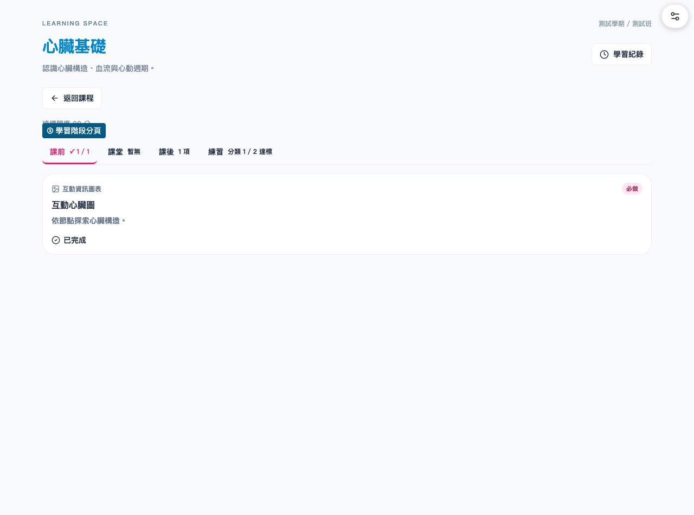
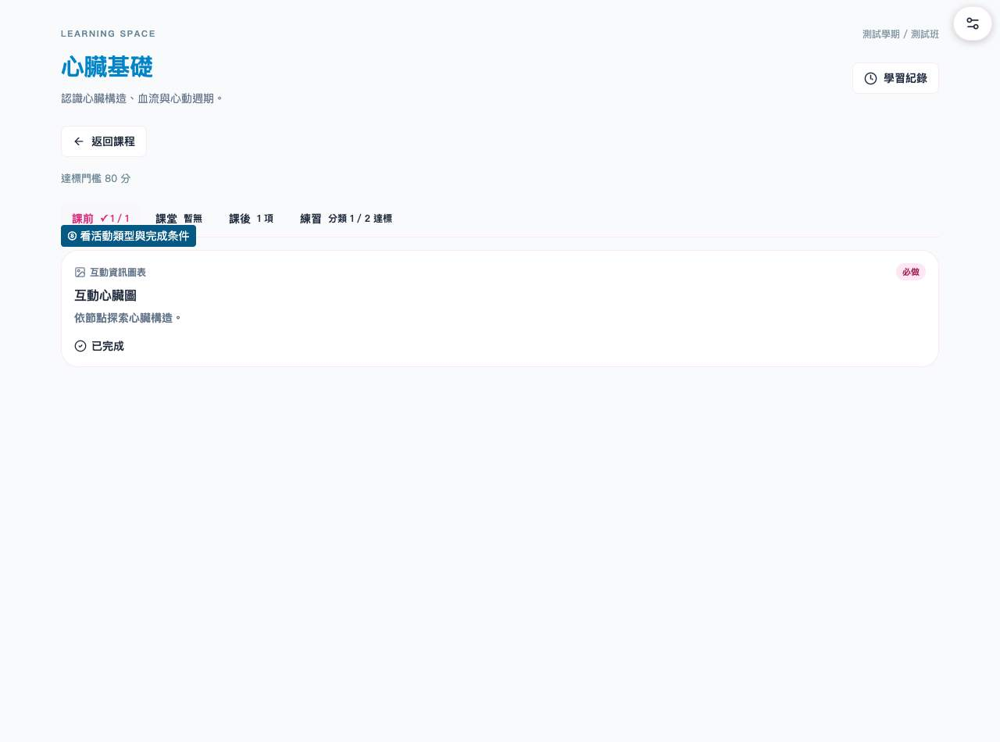
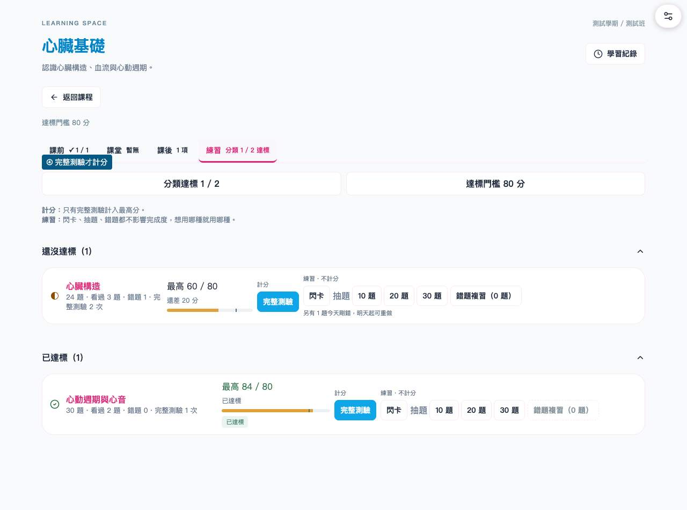
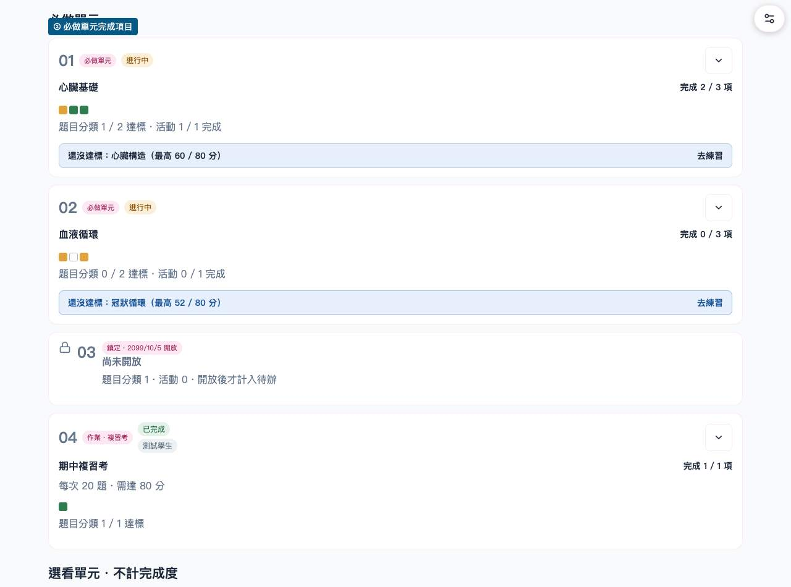
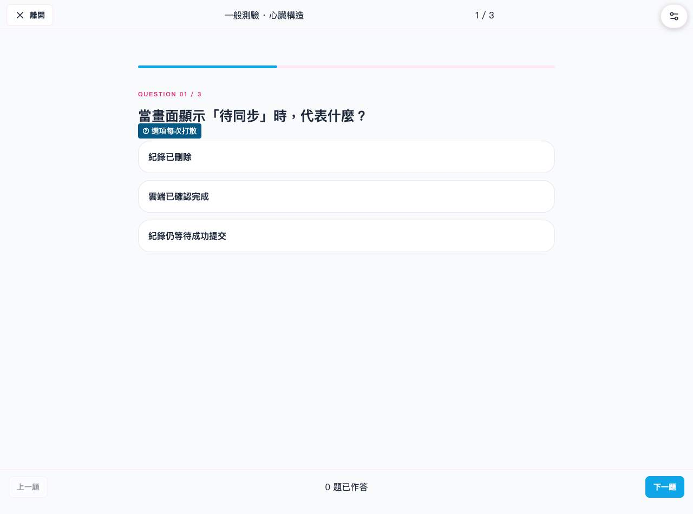
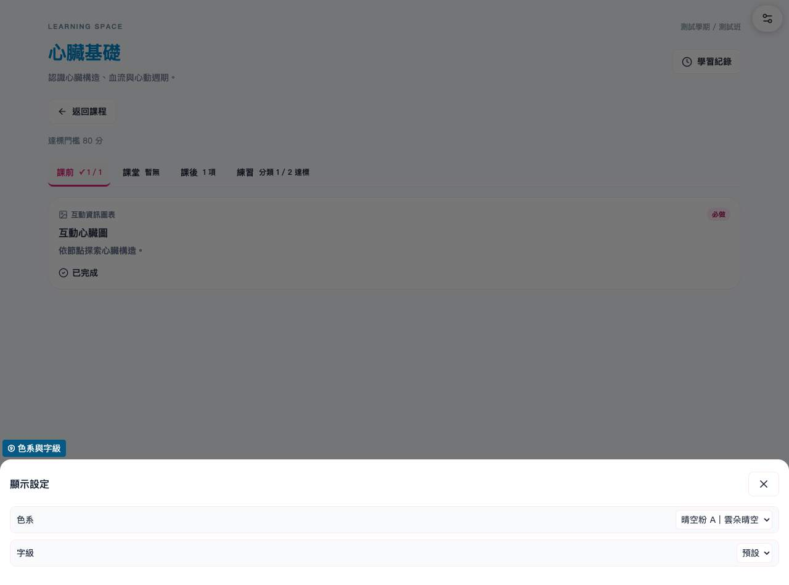
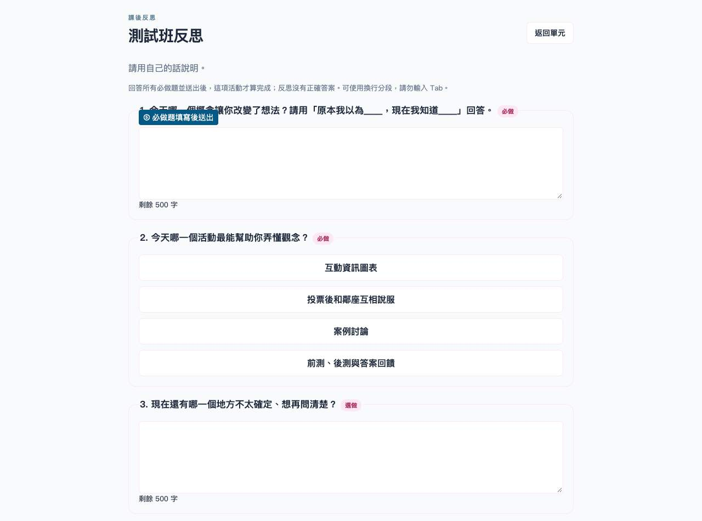

從登入到完成，一步一步來
先看待辦，完成必做；練習不等於達標。這份說明不需登入，可收藏或列印。
畫面均為本機測試班、合成測試帳號，無真實學生個資。點開各節查看細節。
1. 登入
使用老師指定的 Google 帳號；選錯時按「切換帳號」。
看到「不在名冊」時，截圖給老師確認課程與帳號。不要另建帳號或把密碼傳給任何人。

2. 首頁與待辦
先看「待辦」，點進未達標的題目分類或未完成的必做活動。
「建議複習｜錯題」帶你重做待複習題；必做單元顯示完成項目。選看單元不計完成度，老師移出的單元會收在「已考完的單元」。

3. 單元頁
依「課前／課堂／課後／練習」分頁做活動。
卡片標示閱讀教材、互動資訊圖表、YouTube 影片、外部連結、小測驗、反思，以及必做／選做。

4. 教材與影片
先看卡片的完成條件，讀完或通關後確認紀錄已同步。
互動資訊圖表依教材規則通關（常見為先備 6 題與情境 5 題）；閱讀教材及外部連結依頁面提示確認已閱讀。影片通常是選看，會記住播放位置；老師另指定必做時以卡片為準。

5. 練習模式
要達標，請做「完整測驗」。
練習模式比較表在下方；錯題複習只重做昨天以前待複習的題，隔日答對才移除。今天剛錯可先翻閃卡。
| 模式 | 最高分／完成度 | 用途 |
|---|---|---|
| 完整測驗 | 會 | 達到單元門檻 |
| 閃卡 | 不會 | 翻卡看解析 |
| 抽題練習 | 不會 | 自選題數練習 |
| 錯題複習 | 不會 | 隔日重做錯題 |
| 綜合練習 | 不會 | 勾選範圍跨單元複習 |
| 複習考 | 達門檻即完成 | 老師指定的跨單元考試 |

6. 完成度
每個題目分類的完整測驗最高分達門檻，加上全部必做活動完成，單元才算完成。
選看單元與選做活動不計分母；最高分與活動完成會隨帳號保存。複習考最高分達門檻即完成，逾期完成會標示「逾期完成」。一般練習不取代必做活動。

7. 作答與解析
完整測驗交卷後才看正解；選項每次打散、不顯示 ABCD。
交卷後看引導式解析①～④；傳統解析可展開。正式前後測需等老師公布才有成績與解析。

8. 舒適閱讀
使用「顯示設定」或上方選單切換色系與字級。
手機可橫向閱讀；教材提供全螢幕時可放大查看，完成後返回課序。此說明頁也能調整字級、列印。

9. 常見問題
做了卻沒完成，先核對模式、門檻、必做活動和網路同步。
看不到單元：老師可能尚未開放、班級不適用或已移到已考完。換手機：登入相同帳號即可讀雲端紀錄；本機草稿與提示卡不會跨手機。題目改變：題庫更新，錯題依題號延續，答案變更或刪除可能重置。網路中斷：等待同步，必要時重整並核對紀錄。
10. 聯絡老師
附上課程、單元、畫面時間與截圖，說明卡在哪一步。
先遮住其他人的個資；不要傳帳號密碼。正式測驗遇到斷線或沒交到，請老師查紀錄，不要改登入別的帳號重考。
老師有開放時才會看到：正式前後測、課堂互動與反思
正式前後測
老師開放才可開始；有倒數，每份正式測驗只有一次。交卷後先不顯示答案；老師公布後才看得到成績與解析。斷線或沒交到請找老師，不要重新登入別的帳號。補考由老師安排。
課堂互動
老師在投影片或互動頁開放時，手機會出現題目；看倒數，送出後不能改。時間到就停止作答，等老師結束並公布結果；互動不計分、不算單元完成度。老師加時後才能繼續尚未送出的作答。
開放式反思
在單元頁內填寫所有必做題，送出後活動才算完成，沒有標準答案。送出前可修改，本機保存草稿；送出後是否可再改依老師設定，單元截止後只能查看。文字答案可換行；正式保存成功才算完成。
